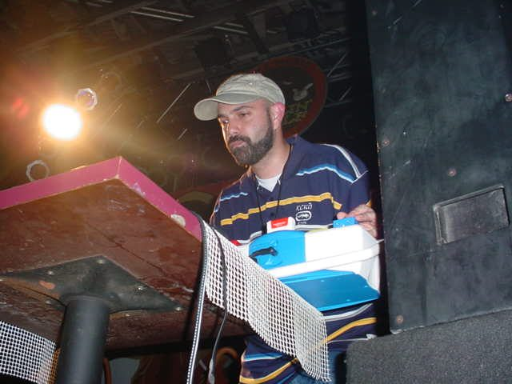

DJ Nu-Mark [Audio]: Beyond the Jurassic age



STREAMING AUDIO INTERVIEW
For many years, DJ Nu-Mark was known as one of the premier beatmakers for the longstanding and much-loved hip hop crew Jurassic 5 – but when the door closed on that act earlier this year right after their Australian tour with the Good Vibrations festival and they all decided to go their separate ways, it was time for Nu Mark to strike out and make a splash under his own name. While he’s still producing other people’s work, he’s been holed up in the studio in the second half of ’07 stockpiling the beats his debut album, which we can expect to hear early next year.
We’ll get be getting a taste of what to expect when he lands in Sydney later this week for the Australian leg of HP ‘Art in Motion’ tour: he’s one of the great innovators when it comes to twisting sound in unique and unpredictable directions, so you can expect all sorts of gadgets, drum machines and even kids toys! ITM’s Angus Paterson has a chat about some of the quirky stuff we’ll be seeing on the tour, why he tries to keep an international scope in his DJ sets, and discovers that Nu-Mark might be working on the next Hilltop Hoods album!
DJ Nu-Mark performs at HP’s Art in Motion at the Forum in Sydney on Dec 6th, along with Coldcut, Pfadfinderei, Apsci, DJ Samrai and more. You can RSVP online for free entry at www.hpinteraction.com.